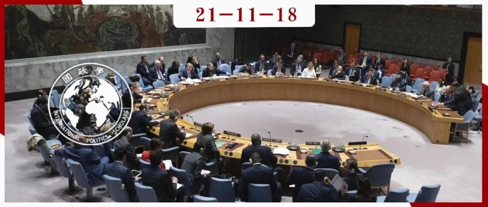

收录于合集 #《国际关系前沿》2021年第11期 18个

作品简介
作者： James Pattison，英国曼彻斯特大学政治系教授。
编译： 肖龙（国政学人编译员，佛罗里达大学博士生）
来源： James Pattison, The International Responsibility to Protect in a Post-Liberal Order, International Studies Quarterly , 2021; sqab081, https://doi.org/10.1093/isq/sqab081
归档： 《国际关系前沿》2021年第11期，总第38期。

内容摘要
本文探讨了后自由秩序对国际保护责任的影响。文章聚焦两大问题：一，后自由秩序中的国际保护责任面临着哪些挑战？二，这些挑战当前，国际保护责任如何在后自由秩序中呈现出不同的需要？针对第一个问题，本文认为，后自由秩序中的国际保护责任可能会处于 “影响力挑战”中，其限制和影响国家的能力会下降。针对第二个问题，国际保护责任的必要条件将在数个不同方面被影响，包括对于优先级问题的加大考虑，以及必要时重新评估甚至放弃当前保护责任中占主导地位的方法。
文章导读
01
当前国际环境下的保护责任
2001年，由加拿大政府主持发起的国际干预和国家主权委员会报告首次提出了保护责任（responsibility to protect，或简称R2P）的概念，并从此产生了极高的国际关注度且时而引起激烈辩论。如今，R2P的中心理念已经被绝大多数国家所接受，甚至是其最大的批评者都已经承认它是国际规范。研究此领域的权威学者们认为，R2P在应对包括科特迪瓦、几内亚、肯尼亚、吉尔吉斯斯坦、以及布隆迪发生的大规模暴行事件中均发挥了影响。更普遍地说，保护责任在制定针对大规模暴行的应对策略中占有中心位置，其核心思想便是国际社会有责任保护受到大规模残暴行为威胁的其他国家人民。
然而，后自由主义秩序的到来或许会给国际保护责任带来极大挑战。一众有右翼民粹倾向的国家元首（特朗普，波萨那罗，奥班等）和一系列反国际主义的事件（例如，英国脱欧以及各种假新闻），从反酷刑规范的退却到对新纳粹主义的公开支持，自由秩序的标准陈词滥调受到了激烈挑战。在后自由主义秩序中，一些作为前自由主义秩序关键组成部分的国家可能会朝威权主义前进，为右翼民粹纲领背书，并刻意回避自由主义。这些国家可能会轻视甚至无视处理大规模暴行的重要性，并更多地推动民族主义和仇外情结。
此外，现有的关于国际R2P的文献也关注崛起大国对其的影响。譬如，许多学者正在研究金砖国家（BRICS）持续扩大的影响力是否会对R2P带来不同层次、不同程度、或正面或负面的影响。其他学者则从现在和近未来的挑战出发，思考从自由主义偏离的广泛冲击。有些学者以欧盟在中非，南苏丹以及缅甸的人道主义干涉为例，认为现今的国际保护责任缺乏合理充分的体制机制，并没有将防止暴行作为优先事项。
本文在两个方面补足了当前国际R2P的研究成果：第一，立足于内在和外在两大领域来探讨R2P在后自由秩序中的挑战。第二，勾画出后自由秩序中的国际保护责任。这两点可以将本文与其他定睛现阶段国际秩序的外在挑战的文献区别开来。
02
国际保护责任的挑战：三大设想
关于国际R2P在后自由主义秩序中将面临的挑战，作者根据不同学者的思想流派提出了三大设想。
（一） 现实-民族主义设想（Realist-nationalist）
此设想与现实主义理论家约翰·米尔斯海默（John Mearsheimer）关于自由主义思想的见解大致相同。民主和人权规范将在一个现实主义和民族主义领导的世界里受到极大打击。 数个主要民主政体被极右政府控制；欧盟瓦解；威权主义大幅抬头。同时，随着资金减少以及各个行为体寻求多边解决方式的意愿下降，包括联合国安理会、国际刑事法庭和世贸组织在内的国际组织被大幅削弱。尽管美国依旧掌握霸权，但是其内部发展出了保守、极右、孤立倾向严重的民族主义。在威权领导人的某种愿望之下，许多国家也声势浩大地追求本国利益。总而言之，世界变成不受规则约束且越来越冲突化——大规模国际冲突回归、国内冲突加剧、人权问题和大规模暴行显著增加。
（二） 多元-主权主义设想（Pluralist-sovereigntist）
在这种情况下，非西方国家将会显著崛起，例如金砖国家集团中的部分成员国。相较于支持国际R2P，它们更愿意为国家主权背书，宣扬反介入主义。人权被看作是纯粹的国家内部问题。美国霸权终结，多极世界秩序开始。世界总体和平且受规则制约，但是民族主义、威权主义、孤立主义在几个前民主国家内部获得主导地位，以联合国为首的各个国际组织仍然保有些许重要性，但随着侵犯人权的行为和大规模暴行的显著增加，其影响力已经削弱，更大程度地受主权思想支配。
（三） 徘徊不定的自由主义设想（Lingering liberalism）
在一个自由主义仍旧有效的世界里，美国的影响力有所下降，但仍旧保有霸权。金砖国家崛起并提倡主权规范，但很快被继续存在但有所削弱的自由秩序限制。极右运动的影响力增长，但很难可持续性地得到选民支持。虽然侵犯人权的情况和大规模暴行数量上升，但并没有急剧增长。规则仍然在世界治理中占主导地位，各种国际机制虽仍发挥部分影响力，但是在资金预算减少跟合法性下降中挣扎。
以上的每一种假想都给国际保护责任带来了重大挑战。但是作者强调，无论如何，所谓的自由主义和国际R2P都不能跟 “西方”画上等号。虽然在这三种设想中，西方的相对力量和自由主义秩序的影响力均在下滑，但是西方的衰退在设想（二）中更加严重，而自由主义秩序在设想（一）中受到的挑战则更大。在设想（三）中，西方相对力量和自由主义秩序的下滑则更为温和。
03
影响力挑战
在介绍完以上三种关于后自由主义世界秩序的设想后，作者指出，自由主义的中心难题是：诸如国际保护责任这样的位于国家边界以外的规范问题受到的关注越来越少。在这三个设想中，作为自由主义制度的国际保护责任的影响力下降便是一个主要挑战。虽然国际R2P在短期内不会完全消失，但是其作为一个受世界各国承认的国际主义规范的地位将明显下降。不管是历来支持自由主义秩序的守成国家，还是希望更加融入国际社会的新兴国家，都会在国内外挑战下越来越难以维护国际保护责任的重要性。同时，在诸如 “假新闻” 之类的舆论工具的帮助下，追求自身利益的国家也可以更加成功地抵御来自外界的指控，且将矛头指向其他国家的伪善。
随着国内政治风向的变化，原本标榜自由主义的国家也将不再优先考虑国际保护责任。2015年，在布隆迪总统恩库伦齐扎为了赢取第二次连任所引发的政治风波中，争议演变成政变，并爆发大规模军民冲突。美国暴行防止委员会（Atrocities Prevention Board）快速启动了防止暴行机制，并实施有针对性的制裁和预防性外交，阻止了最坏情况的发生。然而，在特朗普当政时期，当局取消了暴行防止事务的优先权，埃利·维塞尔法案（防止大屠杀和暴行法案，要求总统每年向国会报告有关跨部门暴行防止政策的事务）中的各项预案仅仅只是草率地实施。这反映出了在现实- 民族主义设想中，有意回避自由主义外交政策的国家会降低防止暴行的优先级。虽然拜登领导下的新政府看起来有意回归先前防止暴行的承诺，但不能保证未来的美国政府不会又一次被民粹右翼势力所控制。在 “影响力挑战” 中，国际保护责任无疑将面临更多难题。
04
在影响力挑战下的国际保护责任
国际保护责任在后自由主义秩序中将需要在三个方面做出变动，分别是执行、优先排序、及其与保护责任的关系。改变的结果便是一个“高度非理想的”（highly nonideal）国际R2P，这与在后自由主义秩序中对保护责任的严重不履行以及极度不利的环境是保持一致的。作者进一步论证了后自由主义秩序中的不理性环境对国际保护责任的改变，并认为根据这种不理想的程度，国际R2P的原则其实可能会更加接近理想的状态。
第一种变动发生在国际保护责任的实际执行措施上。在 “多元-主权主义” 和 “徘徊不定的自由主义”两大情境中，更少的方法和资源将被用于国际R2P，尤其是在较为强制性的措施上，比如单方面的经济制裁和军事介入。国际保护责任将主要在非强制性的手段下执行，其目的是维护继续存在且十分脆弱的多边主义。更有利的措施将囊括维和行动（peacekeeping operation）、通过舆论点名羞辱（naming and shaming）、调解（mediation）、旨在帮助其他国家发展提前预警能力的措施以及为各种人权组织提供的话语和财务支持。
相比之下，人道主义介入很难获得多边授权，且在单边情况下（即缺乏联合国安理会授权）可能进一步损害剩下的多边结构，并严重伤害国际互信。此外，国家也可能滥用不同的人道主义原则以达成进行非人道介入的目的。但是，在“现实- 民族主义” 情境中，因为保护责任的紧迫性、多边维和行动的缺席以及国际机制的崩塌，人道主义介入将仍然是一个重要工具。其他从来没有被用于国际保护责任的方法（比如网络攻击）也需要被纳入考虑中，并需要针对任何直接或间接支持大规模暴行的行为者展开行动。
第二种变动是需要重新考虑国际保护责任的优先级和机会成本。对于现今仍然支持国际保护责任的行为者来说，现有的资源和治理能力无法完全应对所有潜在威胁。如果数个人权或暴行威胁同时发生，加上国际主义的消退和影响力挑战，后自由主义时期的世界将可能会同时存在数个无法被制止的进行中或潜在的大规模暴行。在前文提到过的三种 “情境” 中，国际社会中尚存的愿意付诸保护责任的行为者将会越来越少，使得采取除了军事介入之外的多边解决办法越来越难。显而易见的，这将使得一部分需要保护的群体无法获得应有的保护。同时，优先级的决策过程将因为没有高效框架而无法做出合乎道德的判断。最后，尤其是在“现实- 民族主义” 情境中，关于危机情况信息的缺失也将阻挠决定优先化的过程。
第三种变动来自于对保护责任概念的解释。目前，关于支持 “窄而深” 的保护责任方法的呼声很高，即应用一个较为狭义的保护责任解释以维持共识并建立所谓的 “保护的习惯（habits of protection）”。然而，在 “现实-民族主义” 环境中，一个较为宽松的解释可能比“窄而深”的概念更加明智，在规范上也更加连贯。首先，前者可以超越保护责任的四大罪行（大屠杀、种族清洗、战争罪、反人类罪），也可以对安理会以外的强制行动更加开放，同时也可以与诸如气候变化和疾病防治之类的其他议题挂钩。从规范上说，一个更加广义的解释也可以为国际系统提供一个广泛的“规范簇 ”，以制止潜在或正在进行的人权威胁的国际职责为主。
05
结语
总的来说，后自由主义世界秩序对国际保护职责是严重有害的。国际R2P所面临的影响力挑战则意味着，当暴行发生地越来越频繁且情愿的回应者越来越少时，保护责任影响国家行为的能力将被削弱。随之而来的非理想状态下的国际保护责任将需要不同的执行和优先排序方法，并有可能抛弃现有的关于保护责任的解释。因此，在极端的非理想状态下，国际保护责任的准则将比传统的 “窄而深” 更加广义，并由此可能会更加接近理想状态中的理解。当然，上述分析中的挑战也可能会随着自由主义秩序在未来的复苏而不会最终出现。
译者评述
当今的世界格局反映出原本在冷战结束后由自由主义原则主导的国际主义全球化正在面临倒退风险。右翼民粹势力、贸易保护主义等在世界范围内抬头，使得国际机制和组织的合法性以及权威性遭到质疑，有的甚至正在经历或将分崩离析的困境。新冠疫情大流行之后，随着世界权力的进一步转移以及西方世界的分裂，自由主义国际秩序的影响力进一步被削弱，世界进入后自由主义时代。在本文中，作者就后自由主义世界秩序的模样提出了三项构思，并在其中逐一分析了国际保护责任的位置，由此探析了 “国际保护责任何去何从” 这个问题。
文章中的三大设想情境均立足于自由主义秩序在未来持续减弱的假设上。“现实-民族主义” 情境是针对国际保护责任的最差处境，反映的是已有的国际机制全面消退、民族国家以自身利益为准则的情况。而 “徘徊不走的自由主义”则可以被理解为一个对国际保护责任稍微有利的情境，描绘的是一个虽然被削弱但仍旧施放可观影响力的自由主义世界秩序。第三种设想，即 “多元- 主权主义” 思想，则是介于两者之中，描绘的是一个自由主义秩序消退，并被多极秩序和各个崛起大国取代的世界。
虽然作者Pattison在文章中并没有明确表明出来，但是不难从字里行间看出他对自由主义秩序消退的担忧。同时作者也表露出对多边主义解决方案的向往。然而，国际保护责任所面临的难题就是多边协调解决方案往往会缺乏实际效能且拖延甚久，可是单方面介入虽然快速，但有深陷泥潭且遭到国际社会批评的风险。毫无疑问，这两种路线以外的更优解决方法是存在的。笔者认为，在关于国际保护责任的问题中，与其关注 “自由主义” 或 “非自由主义”，实用主义应该成为中心思想。如同作者所说，在尊重联合国安理会以及地区行为者现有的调停暴行机制的前提下，积极发展探索国际保护责任的非传统方法，或许才是国际机制组织者们最需要关心的问题。
词汇整理
（国际）保护责任
International Responsibility to Protect
美国暴行防止委员会
U.S. Atrocities Prevention Board
保护的习惯 Habits of protection
维和行动 Peacekeeping operation
点名羞辱 Naming and shaming
调解 Mediation
责编 | 李燕 胡可怡
排版 | 王慧瑜 臧泽华
文章观点不代表本平台观点，本平台评译分享的文章均出于专业学习之用, 不以任何盈利为目的，内容主要呈现对原文的介绍，原文内容请通过各高校购买的数据库自行下载。

国政学人
支持学术公益与知识传播
微信扫一扫赞赏作者 __赞赏
已喜欢，对作者说句悄悄话
取消 __
发送给作者
发送
最多40字，当前共字
上一页 1/3 下一页
长按二维码向我转账
支持学术公益与知识传播
受苹果公司新规定影响，微信 iOS 版的赞赏功能被关闭，可通过二维码转账支持公众号。